このリポジトリには、Dynatrace Digital Experience Management (DEM)ワークショップのハンズオンが含まれています。
事前準備
- DynatraceのAccount. フリートライアルの申し込み here
- Chrome ブラウザ
セットアップ
このラボでは、以下のサンプルアプリケーションを使用します。
- サンプルアプリケーション
学習内容
- easyTravelアプリを使ったリアルユーザーモニタリングの設定を理解する
- Dynatraceでの合成について
- Dynatraceのセッションリプレイについて
- ユーザーセッション問い合わせ言語（USQL）について
この演習では、OneAgentをLinuxインスタンスにデプロイし、OneAgentにそのインスタンスで実行されているものを検出させます。
Webブラウザでターミナルを使う
実験を円滑に進めるために、LinuxインスタンスにWebブラウザを介したターミナルでアクセスします。
メールに記載されているURLを使って、SSHターミナルにアクセスします。URLが Public IP Address/wetty のようになっていることを確認してください。
メールに記載されているログイン名とパスワードを使用してください。

OneAgentのダウンロード
ブラウザを開き、DynatraceのURLにアクセスします。
以下の手順に従ってください。
- ナビゲーションメニューから Dynatrace Hub を選択します。
- OneAgent を選択します。
- 右下の Download OneAgent ボタンを選択します。
- Linux をクリックしてください。
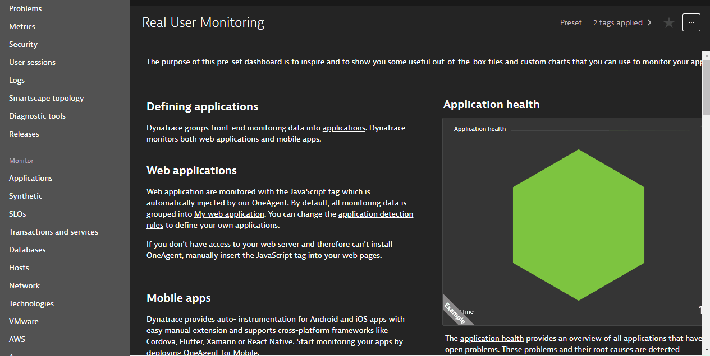
Dynatrace OneAgent for Linuxのページ内で、以下の手順を行います。
- 「Download the installer」テキストフィールドの横にある Copy ボタンをクリックしてください。
- ターミナルウィンドウにコマンドをPasteして実行してください。
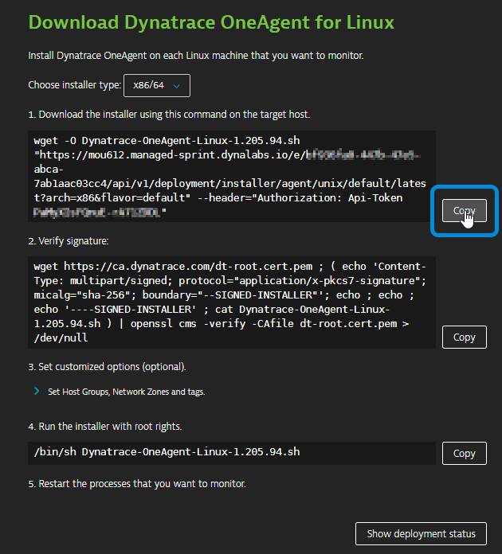
例:
$ wget -O Dynatrace-OneAgent-Linux-1.171.252.sh <follow screen shot above>
--2019-08-07 10:17:45-- https://<URL>
Resolving <URL>... <IP>
Connecting to <URL> | <IP>|:443... connected.
HTTP request sent, awaiting response... 200 OK
Length: 139134801 (133M) [application/octet-stream]
Saving to: ‘Dynatrace-OneAgent-Linux-1.171.252.sh'
100%[======================================>] 139,134,801 84.3MB/s in 1.6s
2019-08-07 10:17:47 (84.3 MB/s) - ‘Dynatrace-OneAgent-Linux-1.171.252.sh' saved [139134801/139134801]
インストールスクリプトの実行
- Run the installer "テキストフィールドの横にある Copyボタンをクリックします。
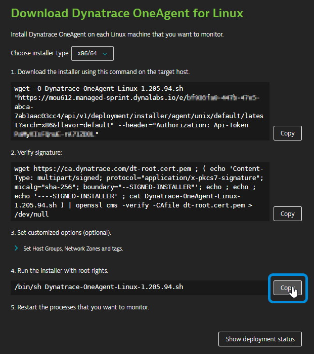
- Append the copy with
sudocommand to make the script executable before you can run it. - Paste the command into your terminal window and execute it.
- Use the password provided in your email
- コピーに
sudoコマンドを付加して、スクリプトを実行可能な状態にしてから実行してください。 - コマンドをターミナルウィンドウに貼り付けて実行してください。
- メールに記載されているパスワードを使用してください。
$ sudo /bin/sh Dynatrace-OneAgent-Linux-1.171.252.sh
10:21:42 Checking root privileges...
10:21:42 OK
10:21:42 Installation started ...
...
10:22:14 Starting agents...
10:22:14 oneagent service started
10:22:14 Checking if agent is connected to the server...
10:22:16 Dynatrace OneAgent has successfully connected to Dynatrace Cluster Node. After completing Dynatrace OneAgent installation on this machine, please return to your browser to complete the remainder of the installation.
$
Deployment status でインストールを検証する
Show deployment status**をクリックすると、接続されているホストの状態が確認できます。
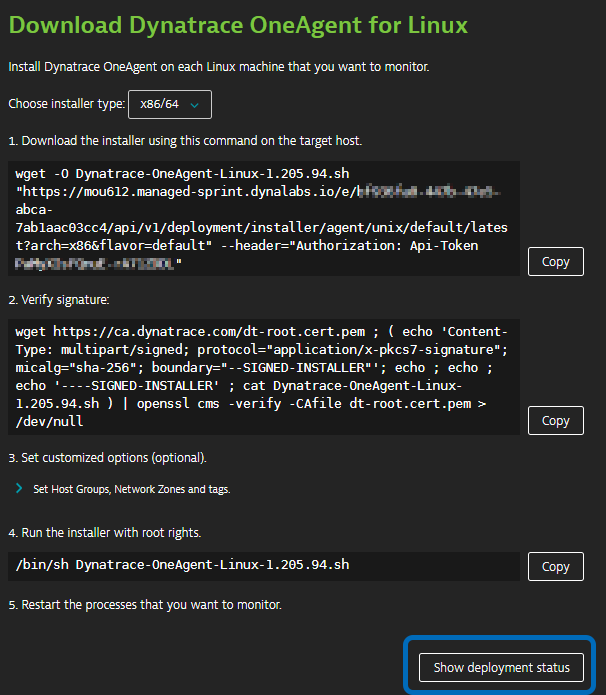
下の画像のように、接続されたホストが表示されているはずです。

Easytravelアプリケーションの再起動
Easy Travelを再起動するには、以下のコマンドを実行してください。
/restart_easyTravel.sh
$ ./restart_easyTravel.sh
Restarting easyTravel ....
Stopping easyTravel ....
OKeasyTravel scenario stopped
Please wait...
Starting easyTravel ....
OKeasyTravel scenario started
Done.
Easytravelアプリケーションを見る
Dynatrace内で、以下の手順でEasytravelのURLを取得します。
- OneAgentのデプロイメント画面でhostnameをクリックします。
- Properties and tag を Host view で展開します。
- メタデータからパブリックホスト名を選択してコピーします。
- ブラウザの新しいタブを開きます。
- アドレスバーに貼り付け パブリック・ホスト名の最後に
:8080を 追加 します。 - Easytravelアプリへのアクセス
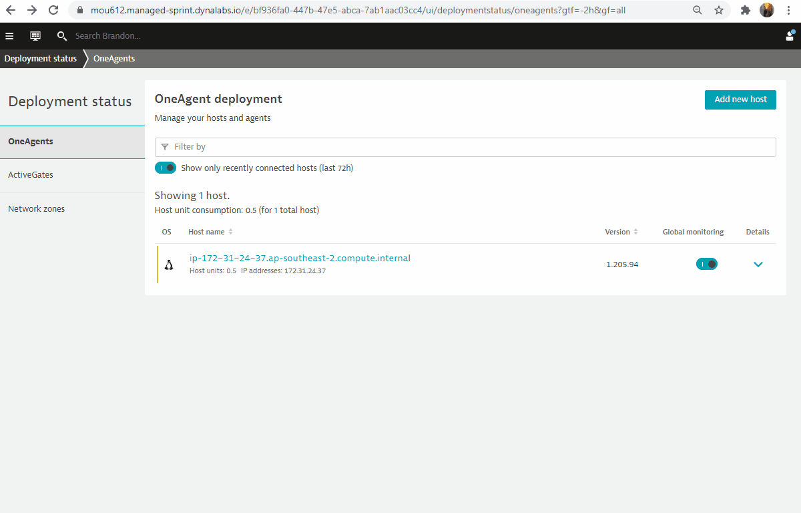
Smartscapeを探る
Easy Travelが起動するのを待っている間、Dynatraceを探索し、Smartscapeを使って、DynatraceがEasy Travelアプリケーションを構成するプロセスと依存関係を自動的に発見することができます。
4 things Dynatraceの魅力をご紹介します。

このラボでは、Real User Monitoring の設定の基本を説明します。これらは、自動注入であれ手動注入であれ、DynatraceのJavaScriptエージェントが展開されるたびに従うべきベストプラクティスの一部です。
学ぶべきこと
- タスク1: アプリケーションの定義。
- タスク2：適切なJavaScriptフレームワークの選択
- タスク3：ユーザーセッションのタグ付け
その他のDEM設定
- ユーザーアクションのネーミング
- セッションプロパティ
- コンバージョンゴール
- 主なユーザーアクション
- エラー
- カスタムメトリクス
上記のいくつかは、APIを介して自動化され、お客様の環境に設定されています。
タスク1: アプリケーションの定義
以下の手順でアプリケーションを定義します。
- 左側のナビゲーションメニューから Applications を選択します。
- My web application プレースホルダーアプリケーションをクリックします。
- スクロールダウンして、「Top 3 included domains」パネルを見つけます。
- View full detailsをクリックします。
- 1つ目のドメイン（例：ip-address.ap-southeast-2.compute.internal）のarrow**をクリックしてドロップダウンさせます。
- + Create new application をクリックしてください。
- アプリケーションが作成され、Applicationsページに表示されます。
- このドメインで監視されているすべてのユーザーアクションは、新しく作成されたアプリケーションにマッピングされます。
- Create をクリックします。
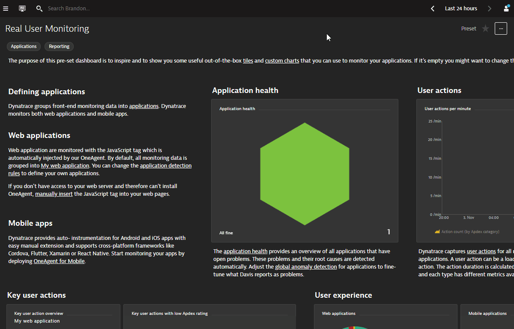
これで内部ドメインのマッピングが完了したので、外部ドメインについても同様の作業を行います。
- 2つ目のドメイン（例：external-ip.ap-southeast-2.compute.amazonaws.com）のarrowをクリックしてドロップダウンさせます。
- Transferをクリックします。
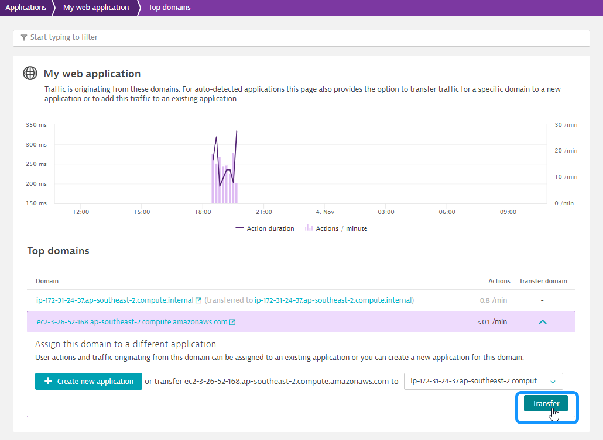
新しく作成したアプリケーションの名前を変更するには
- ナビゲーションメニューから Applications を選択します。
- .ap-southeast-2.compute.internal アプリケーションをクリックします。
- Browse button (...)をクリックし、Editを選択します。
- このワークショップでは、アプリケーション名に Easytravel を使用してください。

タスク2：適切なJavaScriptフレームワークの選択
Javascriptのフレームワークを選択するには
- Framework settings をクリックします。
- 検出されたフレームワークを確認する
- 検出されたフレームワークをトグルオンする（例：Icefaces, jQuery, Prototype）。
- Capture XmlHttpRequest (XHR) をトグルオンする。
- Save をクリック
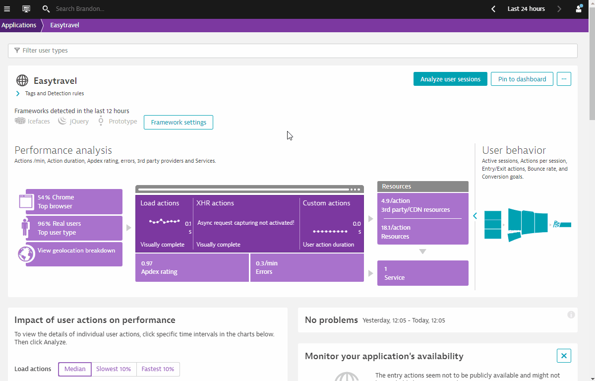
タスク3：ユーザーセッションのタグ付け
次は、ページのメタデータに基づいてユーザーをタグ付けする方法です。このユーザータグ付けのアプローチは、アプリケーションのページソースで利用可能なデータを取り込むことで機能します。ユーザー名は、DOM要素のテキスト、metaタグ、JavaScript変数、あるいはcookie属性に含まれているかもしれません。例えば、DynatraceのデモアプリケーションであるeasyTravelでは、ホームページの右上にあるウェルカムメッセージにユーザー名が含まれています（下の画像参照）。ほとんどのブラウザに搭載されている開発ツールを使って、この特定の要素のために固有のCSSセレクタを生成することができます。
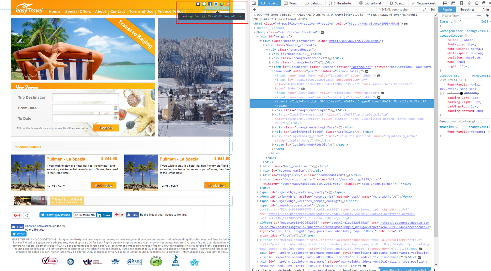
ページソースのどこにユーザー名があるかを確認したら、そのユーザー名に基づいてユーザータグを作成することができます。これを行うには、Dynatraceに戻り、以下の手順を実行します。
- CapturingのUser tagを選択します。
- Add tag (identifier) rule をクリックします。
- ドロップダウンの CSS Selector を選択します。
- ブラウザの開発者ツールからコピーしたCSSセレクタをコピー＆ペーストしてください。
- CSSセレクタを使用する
#loginForm\:j_idt39。 - CSSセレクタは、追加のテキストも拾ってしまうので、クリーンアップルールを適用します。
- CSSセレクタを使用する
- Toggle ON Apply cleanup rule.
- Regex Text Fieldで
Hello ([^!]*+)を使用します。 - Add tag (identifier) rule をクリックします。
- Save をクリック
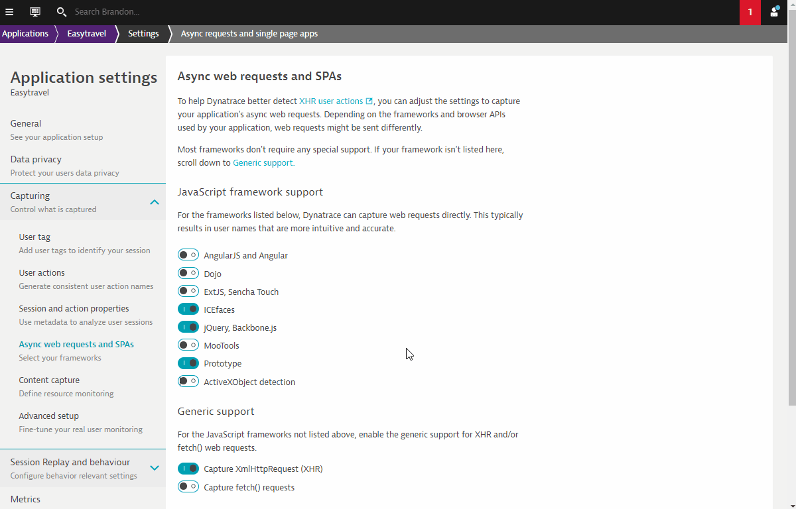
この演習では、Dynatraceで単一のURLの合成テストを作成することを取り上げます。 Dynatraceには、3種類の合成モニタリングがあります。
- シングルURLのブラウザモニター
- ブラウザのクリックパスの監視
- HTTPモニター
1. Easytravelのブラウザモニターをワンクリックで作成する。
- Easytravel Applicationの右欄にあるMonitor from private locationsをクリックしてください。
- エントリーアクションの選択は、上位3つのエントリーアクションに基づいて行われます。
- オプション）必要に応じてトップ3エントリーアクションを編集することができます。
これで3つのブラウザクリックパス合成モニターを作成しました。
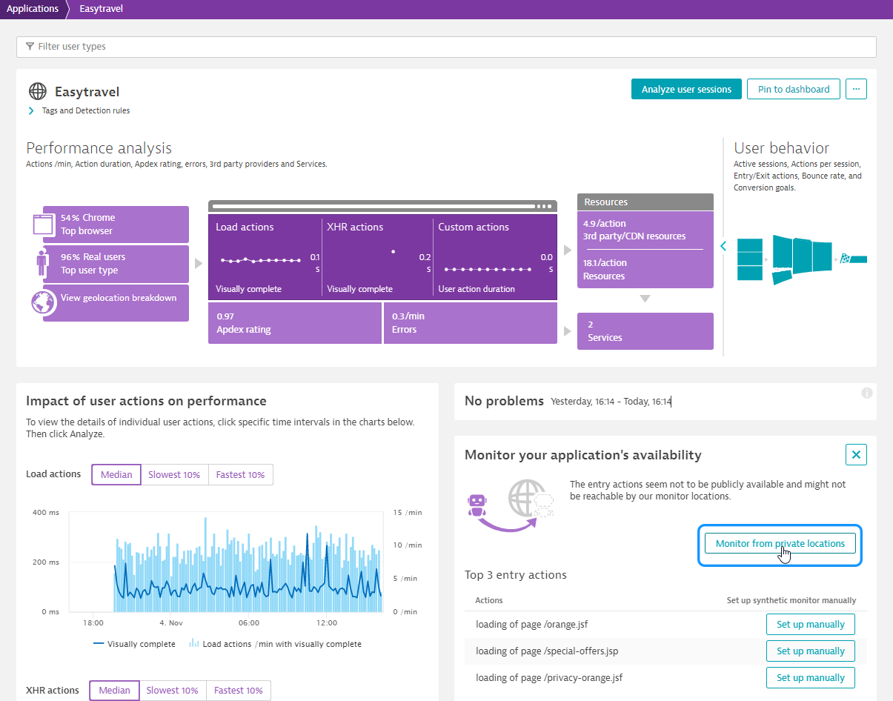
2. Easytravelのブラウザクリックパス合成モニターの作成
以下の手順に従ってください。
- Create a synthetic monitorをクリック
- Create a browser monitorをクリック
- EasytravelのURLをコピーして、URLブラウザモニタにペーストしてください。
- モニターに名前を付けてください - Easytravel。
- スクロールダウンして、Record clickpathをクリックしてください。
- Pop-up Browser が表示されます。クリックパスを以下のように記録します。
- Login (top right)をクリック
- 小さい錠前アイコンをクリックし、いずれかの名前を選ぶ
- Book Nowをクリック
- Nextをクリック
- 小さい錠前アイコンをクリック
- Nextをクリック
- Finishをクリック
- ポップアップされたブラウザウィンドウを閉じる
- 記録されたクリックパスがDynatraceに記録されるようになりました。
- Nextをクリック
- 場所としてシドニー（AWS）を選択してください。
- シドニーノードは、実際にはクラスターのエンドポイントであることに注意してください。
- Nextをクリック
- Create browser monitorをクリック

3. HTTPモニター
以下の手順に従ってください。
- Create a synthetic monitorをクリックします。
- Create an HTTP monitor をクリックします。
- HTTPモニターの名前 - Easytravel.
- Add HTTP request をクリックしてください。
- EasytravelのURLをコピーして、HTTPリクエストのURLテキストフィールドにペーストしてください。
- 名前のテキストフィールドにを貼り付けます。
- HTTPリクエストの追加をクリック
- スクロールダウンして 次へ をクリック
- Scroll down and Select Sydney (AWS) as location.
- Sydneyノードは実際にはクラスタのエンドポイントであることに注意してください。
- Next をクリックします。
- Create HTTP monitor をクリックします。
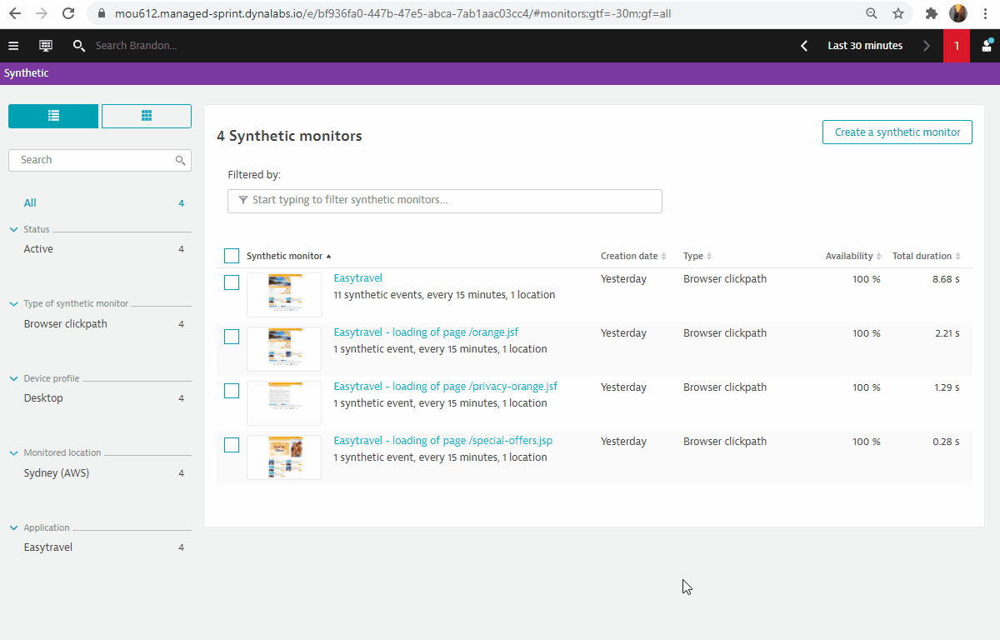
この演習では、Dynatraceのセッションリプレイの設定を取り上げます。
セッションリプレイの有効化
以下の手順でセッションリプレイを有効にしてください。
- 左のナビゲーションメニューからApplicationsを選択します。
- Easytravelアプリケーションをクリックします。
- Browse button (...)をクリックし、Editを選択します。
- Session Replay and behaviorとSession Replayをクリックします。
- Enable Session Replayをオンにします。
- スクロールダウンして Save をクリックします。
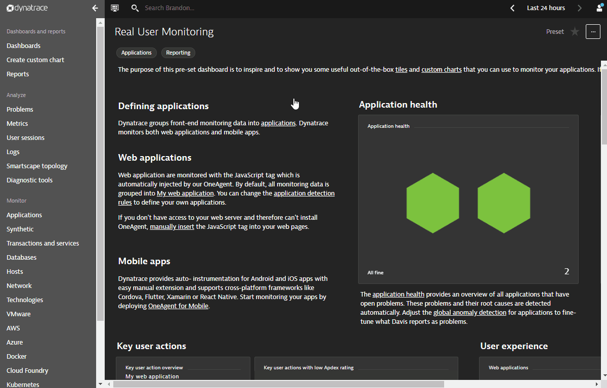
セッションリプレイを撮影するための負荷をシミュレート
セッション・リプレイの確認
数分後、Dynatraceの左ナビゲーションバーにあるUser Sessionsの下で、自分のセッションを見つけることができます。
- Replayを有効にしているセッションのフィルタリング
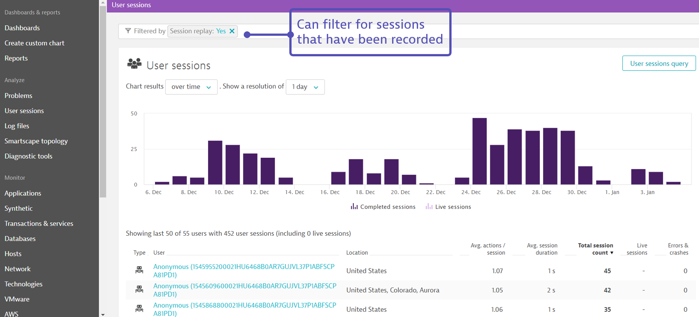
- セッションの再生
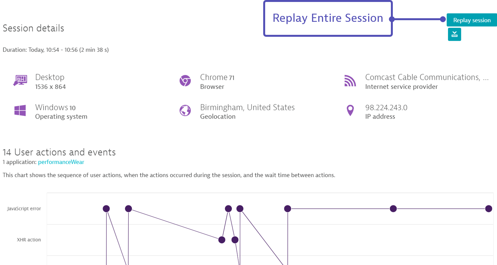
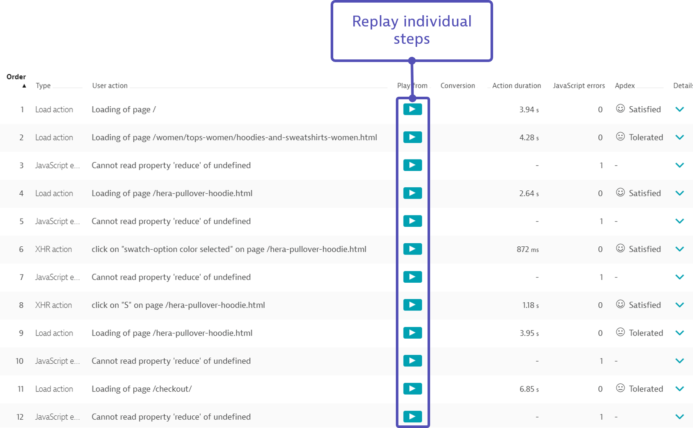
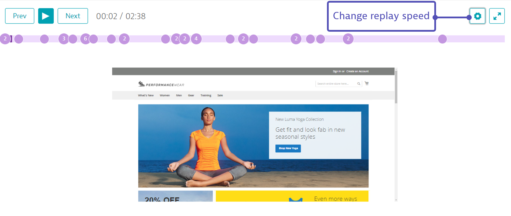
個人情報保護のための追加設定
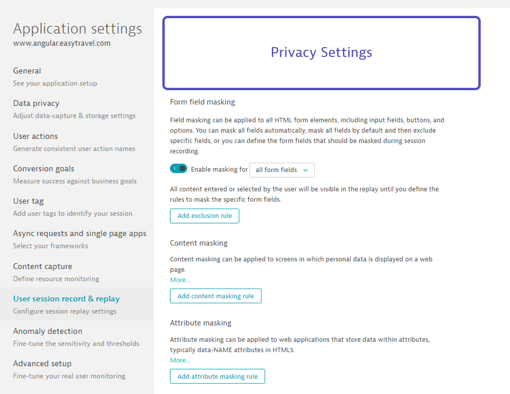
Dynatraceは、ユーザーが監視対象のアプリケーションにアクセスするたびに、詳細なユーザーセッションデータを取得します。このデータには、すべてのユーザーアクションとハイレベルなパフォーマンスデータが含まれます。Dynatrace APIまたはDynatrace User Sessions Query Language (USQL)を使用すると、キャプチャしたデータに対して強力なクエリ、セグメンテーション、アグリゲーションを簡単に実行できます。 User Sessions Query LanguageはDynatrace専用のクエリ言語ですが、いくつかのSQLの概念に基づいており、構文も似ているため、簡単に使い始めることができます。
USQLを使用する典型的なユースケースは、ビジネス指標を視覚化するダッシュボードを構築することです。
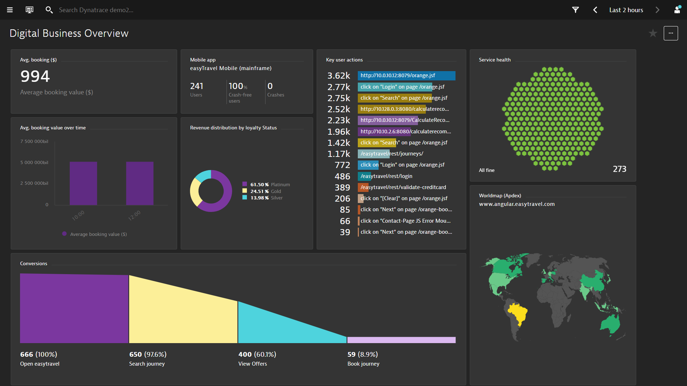
1. USQLを知る
以下の手順でご確認ください。
- ナビゲーションメニューから ユーザーセッション を選択します。
- トップバーのフィルターを使用し、アプリケーションとしてEasytravelを選択します。
- ユーザーセッションクエリ をクリックします。
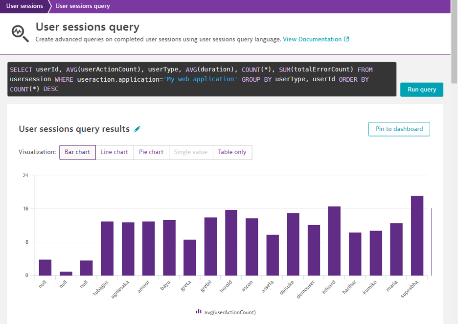
サンプルクエリ
ユーザージャーニーのためのファネルの作成
SELECT FUNNEL(useraction.name="loading of page /special-offers.jsp" AS "Special Offers landing page", useraction.name = "loading of page /orange-booking-review.jsf" AS "Review package", useraction.name = "loading of page /orange-booking-payment.jsf" AS "Payment") FROM usersession
特定の場所からのページパフォーマンスの把握
SELECT DATETIME(starttime, 'MM/dd/yyyy hh:mm', '30m'),AVG(useraction.visuallyCompleteTime)
FROM usersession
WHERE country IS "United States" GROUP BY DATETIME(starttime, 'MM/dd/yyyy hh:mm', '30m')
どのユーザーにエラーが発生しているかを把握する
SELECT userId, SUM(totalErrorCount) FROM usersession
WHERE totalErrorCount IS NOT NULL
GROUP BY userId ORDER BY SUM(totalErrorCount) DESC
統計・分析の収集
SELECT COUNT(*) FROM usersession WHERE useraction.name = "loading of page /orange.jsf"
このラボを楽しんでいただき、お役に立てれば幸いです。ご意見、ご感想をお待ちしております。